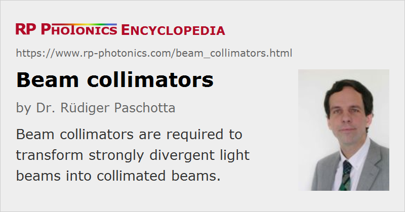

Beam Collimators
Definition: devices for collimating optical beams
German: Kollimatoren, Strahlkollimatoren
Categories: general optics, lasers
How to cite the article; suggest additional literature
Author: Dr. Rüdiger Paschotta
The purpose of a beam collimator is essentially to transform a strongly diverging light beam into a collimated beam, i.e., a beam where light propagates essentially only in one direction, and the beam divergence is weak. The output beam may have its focus close to the output aperture, or a mild focus somewhat away from it (see Fig. 1).
Essentially, a beam collimator contain some kind of focusing lens, or sometimes a curved mirror, and usually some opto-mechanics for stable mounting and possibly adjustment.
Typically, beam collimators are applied in conjunction with the following types of light sources:
- optical fibers – see the article on fiber collimators
- laser diodes of different kinds, e.g. single-mode emitters, broad-area laser diodes and devices such as diode bars (diode arrays) with multiple emitters – see the article on laser diode collimators
- other waveguide devices, for example in integrated optics
- free-space laser sources, e.g. diode-pumped solid-state lasers
In many cases, the collimation is done in both directions perpendicular to the beam, but there are also beam collimators working in one direction only – for example, fast axis collimators made as rod lenses, which are attached to certain laser diodes.
Typical Requirements
The requirements on a beam collimator can be very different, depending on the light source with which it is used:

- Some light sources exhibit a strong beam divergence, and it is then often necessary to use aspheric optics to avoid significant beam quality deterioration due to spherical aberrations.
- In some cases, the beam is strongly asymmetric, with much stronger divergence in one direction than the other. A simple beam collimator may then produce an elliptical beam, but one may apply additional elements such as an anamorphic prism pair for obtaining a circular beam profile.
- While some collimators can be used with a fixed alignment, others need to be adjustable, at least concerning the focus, which can be modified through the distance between light source and collimation lens.
- The beam pointing stability of the generated beam depends on how mechanically stable the setup is. Note that tiny thermal drifts, for example, may cause significant changes of beam direction particularly in cases where the focal length of the collimating lens is small.
- Some devices need to work with very high optical powers, so that one needs to minimize propagation losses and avoid thermal effects.
Suppliers
The RP Photonics Buyer's Guide contains 58 suppliers for beam collimators. Among them:
Questions and Comments from Users
Here you can submit questions and comments. As far as they get accepted by the author, they will appear above this paragraph together with the author’s answer. The author will decide on acceptance based on certain criteria. Essentially, the issue must be of sufficiently broad interest.
Please do not enter personal data here; we would otherwise delete it soon. (See also our privacy declaration.) If you wish to receive personal feedback or consultancy from the author, please contact him e.g. via e-mail.
By submitting the information, you give your consent to the potential publication of your inputs on our website according to our rules. (If you later retract your consent, we will delete those inputs.) As your inputs are first reviewed by the author, they may be published with some delay.
See also: collimated beams, fiber collimators, laser diode collimators, parabolic mirrors, rod lenses, ball lenses
and other articles in the categories general optics, lasers
|  |
If you like this page, please share the link with your friends and colleagues, e.g. via social media:
These sharing buttons are implemented in a privacy-friendly way!